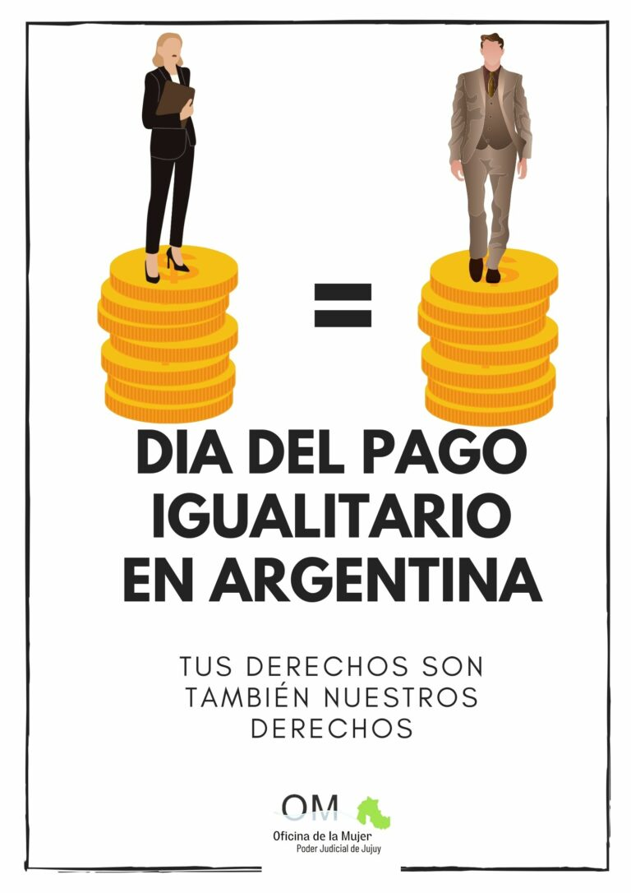

EDIFICIOS PÚBLICOS SUSTENTABLES: INSTALARON COMPOSTERAS DE RESIDUOS
ORGÁNICOS EN EL EDIFICIO CENTRAL DEL PODER JUDICIAL
abril 9, 2024
Jueces de la Suprema Corte de Justicia, miembros del Juzgado
Ambiental, funcionarios y empleados asistieron a la instalación de
composteras de residuos orgánicos en uno de los patios del
edificio central de Tribunales, este 9 de abril de 2024...
Leer mas
PROGRAMA DE ENTRENAMIENTO JUDICIAL EN INNOVACIÓN Y LIDERAZGO
9 abril, 2024 5:21 pm
La publicación por parte de la Escuela de Capacitación del Poder Judicial ”Dr. Guillermo Snopek” de la
capacitación precedente, se realiza con el único objeto de informar a los operadores jurÁdicos, las ofertas
académicas que llegan a su conocimiento. La Escuela, no participa de ningún modo en su organización,
definición...
Leer mas

DIA DEL PAGO IGUALITARIO
9 abril, 2024 1:08 pm
Hoy 🗠ğğ ğšğ›ğ«ğ¢ğ¥l, se celebra en Argentina el ğƒğ¢Ìğš ğğğ¥ ğğšğ ğ¨ ğˆğ ğ®ğšğ¥ğ¢ğğšğ«ğ¢ğ¨, para
concienciar a la ciudadanÁa sobre la desigualdad existente entre los salarios de mujeres y varones. Surgió a
raÁz del impulso de la 𝐀𝐬𝐨𝐜𝐢𝐚𝐜𝐢𝐨́𝐧 𝐂𝐢𝐯𝐢𝐥 ğ„ğœğ¨ğŸğğ¦ğ¢ğ§ğ¢ğğš ...
Leer mas

DIPLOMADO: EXPERTO EN EL ÁREA DE CAPACITACIÓN
9 abril, 2024 8:05 am
La publicación por parte de la Escuela de Capacitación del Poder Judicial ”Dr. Guillermo Snopek” de la
capacitación precedente, se realiza con el único objeto de informar a los operadores jurÁdicos, las ofertas
académicas que llegan a su conocimiento...
Leer mas
EL PODER JUDICIAL SE SUMA AL MEGA EVENTO AMBIENTAL “RECICLATON”
5 abril, 2024
El Poder Judicial se suma al Mega Evento Ambiental “Reciclatón” que se realizará el próximo martes 9 de
abril de 9 a 14 horas en ...
Leer mas
JUEZAS DE LA SUPREMA CORTE DE JUSTICIA ASISTIERON A LOS ACTOS EN HOMENAJE A LOS HEROES DE MALVINAS
abril 3, 2024
Las Juezas de la Suprema Corte de Justicia Dras. Laura Nilda Lamas González y MarÁa Eugenia Nieva asistieron
a los actos conmemorativos por el “DÁa del Veterano y de los CaÁdos en la Guerra de Malvinas†realizados
ayer, 2 de abril.
Leer mas